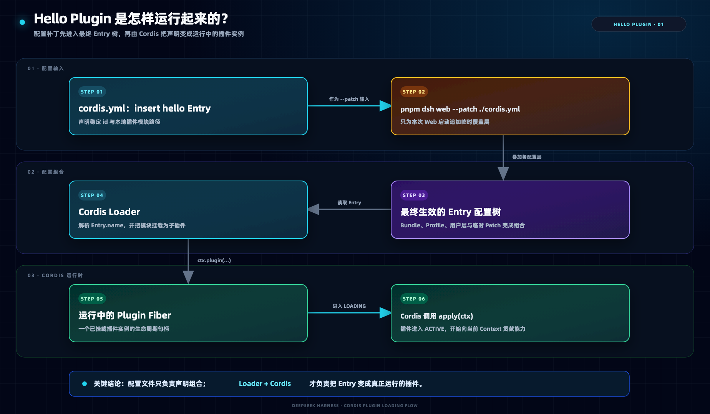

3.1 · EVERYTHING IS A PLUGIN
3.1 一切皆插件
下面用四个实验逐层展开；每个概念只在第一次用到它的实验前解释，学完再回到 3.1.6 串成完整机制。
先看四个实验的路线图
四个实验从“加载一个插件”开始，逐步体验增加工具、在线换配置和打包分发 UI 插件。先看懂每个实验要做什么、会看到什么，再进入实验前的理论。
| 实验 | 动手做什么 | 通过这个实验体验什么 |
|---|
| 实验一：Hello Plugin | 写一个打印日志的本地 Plugin，用临时 Patch 启动 Web。 | 体验一个插件怎样被加载，并真正运行起来。 |
| 实验二：Greet Tool | 注册一个 greet Tool，让模型调用它并返回问候结果。 | 体验一个插件怎样给模型增加新工具，让模型可以主动调用它。 |
| 实验三：Provider 配置热更新 | 修改 Web Profile 的持久 Patch，观察 Provider 卸载、Consumer 等待与重新加载。 | 体验修改插件配置后，旧能力怎样自动退出，新能力怎样重新生效。 |
| 实验四：蚂蚁 UI Plugin | 把 Host、Client 和 Patch 打包成 npm Bundle，安装并验收。 | 体验怎样把一个 UI 插件打包、安装，并交给其他人直接使用。 |

原图需要登录后访问。
官网定义与运行界面的对照：能力最终体现为可配置的 Plugin 实例语雀原图
3.1.2 实验一：Hello Plugin
本实验只回答一个问题：一个本地插件如何进入本次 dsh web 的配置树，并最终执行 apply(ctx)？
概念一：什么是 Cordis Plugin

原图需要登录后访问。
Plugin 的最小入口：导出 name 与 apply(ctx)语雀原文截图
name诊断名称
用于日志和诊断界面显示，不负责定位模块文件。
apply(ctx)插件入口
依赖就绪后由 Cordis 调用；插件从这里开始贡献能力。
概念二：怎样让插件生效
insert 先向最终配置树追加 Entry，Loader 再解析模块、挂载插件并调用 apply(ctx)；配置行本身不会直接执行代码。
cordis.yml
- insert:
- id: hello
name: '/absolute/path/to/my-plugin.ts'
TERMINAL · 使用这份 Patch 启动
pnpm dsh web --patch ./cordis.yml
PATCH插入 hello Entry--patch 把临时配置追加到本次启动的最高优先级。
LOADER解析模块并挂载稳定 id 标识实例，模块路径来自 YAML 的 name。
PLUGIN执行 apply(ctx)本次挂载形成运行中的插件实例，并打印加载日志。
现在开始实验
INTERACTIVE STATIC LAB · 4 STEPS实验一：Hello World 插件单独打开 ↗
实验一总结：Hello Plugin 如何运行起来
cordis.yml 只声明要插入的 Entry；启动时，--patch 将它叠加到最终配置树，Loader 再把这条声明变成运行中的 Plugin Fiber，并由 Cordis 调用 apply(ctx)。

未找到本地总结图，请确认 output/architecture/hello-plugin-loading-flow.png 存在。
从配置声明到运行实例：Loader 连接 Entry 与 Plugin Fiber讲义自制图
3.1.3 实验二：动手开发 1 个 Tool 插件
本实验在 Hello Plugin 上只增加四个概念：Service、ctx.tools、inject 和 Tool 注册。
概念一：什么是 Cordis Service

原图需要登录后访问。
Service 不是 Plugin 本身，而是 Plugin 对外公开能力的方式语雀原文截图
概念二：谁提供 ctx.tools
@deepseek-ai/dsh-tools 插件中的 ToolRuntime 继承 Cordis 的 Service，并以 tools 为名挂到 Context。
ToolRuntime · TypeScript 核心关系
import { Context, Service } from '@deepseek-ai/cordis'
export class ToolRuntime extends Service {
constructor(ctx: Context, config: Config = {}) {
super(ctx, 'tools')
}
}
PROVIDERdsh-tools PluginToolRuntime 以 tools 为名提供 Service。
CONTEXTctx.toolsContext 暴露具名能力，隔开 Provider 实现与 Consumer。
CONSUMERGreet Plugin只声明需要 tools，不直接导入 ToolRuntime。
概念三：A 插件怎样引用 B 插件的 Service
DEPENDENCY
export const inject = ['tools']
tools 状态 | Cordis 对 Greet Plugin 的处理 |
|---|
| 不存在 | 保持 PENDING，不执行 apply。 |
| 出现 | 加载插件，可以安全使用 ctx.tools。 |
| 运行中消失 | 自动卸载当前插件并等待。 |
| 重新出现 | 自动重新加载插件。 |
概念四：怎样增加一个模型可见的 Tool
defineTool(...) 定义名称、参数和执行逻辑；ctx.tools.register(...) 把 Tool Definition 加入 ToolRuntime。工具对当前 Agent 可见后，既能作为 Native Tool，也能进入 Code Mode 的生成 SDK，不需要修改 run_code。
TOOL REGISTRATION · TypeScript
ctx.tools.register(defineTool({
name: 'greet',
parameters: {
name: { type: 'string', required: true },
},
async execute(args) {
return `Hello, ${args.name}!`
},
}))
| 阶段 | 实际作用 |
|---|
defineTool(...) | 生成同时包含 Schema 与 execute 的 Tool Definition。 |
ctx.tools.register(...) | 把定义加入 Tool Registry，并将这次注册绑定到当前 Plugin Fiber 的 Effect。 |
| Native Mode | 模型直接看到 Tool Schema，以原生工具调用它。 |
| Code Mode | run_code 生成包含该工具的 SDK，在代码内编排调用。 |
| Plugin 卸载 | 注册 Effect 被撤销，该工具从 Registry 中自动移除。 |

原图需要登录后访问。
Tool Plugin → ctx.tools → Tool Registry → Native / Code Mode；注册属于调用插件的 Effect语雀原图
现在开始实验
INTERACTIVE STATIC LAB · 4 STEPS实验二：独立 Greet Tool单独打开 ↗
3.1.4 实验三：体验 Provider 配置热更新
本实验把角色先对齐：Mock Provider 提供 mockProvider Service，Consumer 声明依赖它；本节只新增 Profile Patch、Context/Effect 和配置热更新。
概念一：Profile 的 cordis.patch.yml
Profile 是 $DSH_HOME/profiles/<name> 下的一套可启动组合。Web Profile 中，cordis.patch.yml 保存用户持久配置，并由长时间运行的 Web 进程监听。
WEB PROFILE 目录~/.dsh/profiles/web/
package.json # 定义 Web Profile 使用的 Bundle
cordis.yml # 启动器维护的配置根
cordis.patch.yml # 用户持久增加或替换的 Plugin Entry
| 配置入口 | 生效时间 | 用途 |
|---|
pnpm dsh web --patch ./cordis.yml | 只在本次启动生效，不监听在线修改 | 一次性实验 |
~/.dsh/profiles/web/cordis.patch.yml | 后续启动自动生效，运行中监听有效修改 | 持久配置与热更新 |
概念二：什么是 Context 与 Effect

原图需要登录后访问。
Effect 把注册或外部资源的清理方法交给当前 Plugin Fiber语雀原文截图
ctx 是 Cordis 传给当前 Plugin Fiber 的运行时 Context：插件用它挂载子插件、访问 Service、监听 Event，并登记可撤销的资源。
CONTEXT PROXYctx
Plugin 生命周期ctx.plugin()ctx.effect()挂载子插件，并登记随当前 Fiber 回卷的资源。
Servicectx.provide()ctx.get()提供或读取由名称标识的能力。
Eventctx.on()ctx.emit()监听或发送 Cordis Event。
动态 Servicectx.toolsctx.<service>Plugin 提供的 Service 会通过 Context Proxy 暴露。
01Cordis 能感知：ctx.on()
ctx.on() 用于监听 Cordis Event。下面的插件观察每次工具执行完成后的名称与结果：
EVENT LISTENER · 自动归属当前 Fiber
export function apply(ctx: Context) {
ctx.on('tools/result', (execution, result) => {
console.log(execution.name, result)
})
}
Cordis 为什么能清理：ctx.on() 会把监听器登记到当前 Plugin Fiber。插件卸载时，监听器自动移除，不需要手动调用 off()。
02Cordis 能感知：ctx.tools.register()
ctx.tools 是 @deepseek-ai/dsh-tools Plugin 提供的 ToolRuntime Service。register() 不是 Cordis Core 的 Context 方法，但它内部使用 Cordis Effect 保存注册关系。
GREET TOOL · Service 内部登记 Effect
export function apply(ctx: Context) {
ctx.tools.register(defineTool({
name: 'greet',
description: 'Greet someone by name.',
parameters: {
name: {
type: 'string',
required: true,
},
},
output: {
schema: { type: 'string' },
render: (_args, value) => [
{ type: 'text', text: value },
],
},
async execute(args) {
return `Hello, ${args.name}!`
},
}))
}
OWNERGreet Plugin Fiber当前插件拥有这次工具注册。
SERVICEctx.tools.register(greet)ToolRuntime 接收 Tool Definition。
EFFECTTool Registration EffectFiber 卸载时，greet 自动从注册表移除。
03Cordis 不能直接感知：setInterval()
定时器由 JavaScript API 创建。即使函数接收了 ctx，Cordis 仍不知道定时器 ID，也不知道插件卸载时需要调用 clearInterval()。
未登记 · 不会自动停止
export function apply(ctx: Context) {
setInterval(() => {
console.log('tick')
}, 1000)
}
ctx.effect() · 自动执行清理
export function apply(ctx: Context) {
ctx.effect(() => {
const timer = setInterval(() => {
console.log('tick')
}, 1000)
return () => {
clearInterval(timer)
}
})
}
04Cordis 不能直接感知：fs.watch()
文件监听器由 Node.js API 创建。直接调用 watch() 时，Cordis 不知道返回的 watcher，也不会在插件卸载时调用 close()。
未登记 · watcher 继续存在
import { watch } from 'node:fs'
export function apply(ctx: Context) {
watch('./config.json', () => {
console.log('config changed')
})
}
ctx.effect() · 卸载时 close()
import { watch } from 'node:fs'
export function apply(ctx: Context) {
ctx.effect(() => {
const watcher = watch('./config.json', () => {
console.log('config changed')
})
return () => {
watcher.close()
}
})
}
✓如何判断 Cordis 能不能清理
| 注册方式 | Cordis 是否感知 | 插件卸载时 |
|---|
ctx.on(...) | 是 | 自动移除监听器 |
ctx.tools.register(...) | 是，内部使用 Effect | 自动注销工具 |
直接 setInterval(...) | 否 | 不会自动停止 |
直接 fs.watch(...) | 否 | 不会自动关闭 watcher |
在 ctx.effect() 中创建定时器 | 是 | 执行 clearInterval() |
在 ctx.effect() 中创建 watcher | 是 | 执行 watcher.close() |
判断原则：资源是否在函数中使用了 ctx 并不重要；关键是注册关系或清理方法有没有进入当前 Plugin Fiber 的 Effect。
概念三：配置热更新如何发生
保存 Profile Patch 后，Loader 通过稳定 id 找到旧 Entry；Cordis 先卸载旧 Provider 并回卷 Effect，Consumer 因 Service 消失而等待，再按新配置加载 Provider 和 Consumer。

原图需要登录后访问。
一次配置变更的完整周期：监听、比较、卸载、回卷、重建与依赖恢复语雀原图
原图展示完整因果链；下面的讲义示意图把课堂观察点压缩为 Dispose、等待依赖和 Reload 三个阶段。
HMR LIFECYCLE讲义示意图 · 非官方
现在开始实验
INTERACTIVE STATIC LAB · 5 STEPS实验三：模拟 Provider 参数热更新单独打开 ↗
关键区别：--patch 是一次性启动覆盖层；长期运行的 Web 会监听用户 Profile 中的 cordis.patch.yml。
3.1.5 实验四：打包并发布 1 个蚂蚁 UI 插件
本实验回答三个问题：发布一个插件实际发布什么、如何打包与发布、plugin add 安装后具体改了什么。
概念一：发布单元是 npm 包，不是一个源码文件
如果希望用户通过 dsh plugin add 安装后自动启用插件，这个 npm 包还要声明为 DSH Bundle，把可运行代码与配置 Patch 一起交付。
dsh-running-ant/
package.json # 包入口、发布文件与 DSH Bundle 声明
cordis.patch.yml # 安装后要加入的 Plugin Entry
lib/ # Host、Client 等构建后的可运行产物
| Manifest 字段 | 作用 |
|---|
main、exports | 指向构建后的运行入口。 |
files | 决定 .tgz 与 Registry 包包含哪些文件。 |
dsh.bundle.patch | 声明这是 DSH Bundle，并指向随包发布的 Patch。 |
概念二：怎样打包和发布
pack 与 publish 使用同一份 npm 包内容：前者生成本地 .tgz，后者上传 Registry。先检查 tarball 和 publish --dry-run 清单，再执行真正发布。
Build构建 Host 与 Client 产物。
Packpnpm pack 生成可安装的 .tgz。
Installdsh plugin add 把包和 Bundle Patch 加入 Web Profile。
Publish验收 tarball 后，再由包所有者发布 npm 版本。
发布前检查：prepack 可以保证打包前构建，但仍要确认 lib/ 与 cordis.patch.yml 已进入 tarball，同时排除测试、本机配置和其他不应发布的文件。
概念三：plugin add 实际改了什么
dsh plugin --profile web add 在 Web Profile 中安装 npm 包，并把声明了 dsh.bundle 的包加入 Bundle 列表；它不会改写用户的 cordis.patch.yml。
| 位置 | 安装后的变化 |
|---|
~/.dsh/profiles/web/package.json | dependencies 增加插件包，dsh.profile.bundles 增加 Bundle 名。 |
pnpm-lock.yaml | 记录插件版本及依赖解析结果。 |
node_modules/ | 安装插件包和运行依赖。 |
cordis.patch.yml | 不修改；启动时读取包内 dsh.bundle.patch。 |
INSTALL安装 .tgz包进入 Profile 的依赖，并登记到 Bundle 列表。
BOOT读取 Bundle Manifest启动 Web 时解析 dsh.bundle.patch 指向的包内 Patch。
LOAD插入 UI Entry应用 cordis.patch.yml，Loader 挂载 dsh-running-ant。
现在开始实验
INTERACTIVE STATIC LAB · 6 STEPS实验四：打包并发布蚂蚁 UI 插件单独打开 ↗
安全边界：这是静态教学回放；所有构建、测试、打包、安装和启动按钮只更新页面内的模拟终端，不会访问本机文件、端口或 npm Registry。
3.1.6 Cordis 总结：为什么“一切皆插件”能成立
四个实验看到的不是四套孤立技巧，而是同一条链路：配置选择插件，Cordis 管理协作与生命周期，插件贡献 Agent 能力。
学完四个实验，再看完整关系
CONFIGURATION选择 Plugin EntryProfile 选择 Bundle，Patch 用稳定 id 插入或替换 Entry。
CORDIS RUNTIME管理 Fiber 生命周期Loader 挂载插件；Context 用 Service、Event 与 Effect 组织协作和清理。
AGENT CAPABILITY形成实际 Harness模型、工具、会话、沙箱、循环、调度和 UI 都由插件贡献。

原图需要登录后访问。
从下到上：Cordis 内核 → Plugin 实现 → Agent Runtime 能力 → 配置选择与替换语雀原图
| 实验动作 | 运行时发生什么 | Cordis 机制 |
|---|
| Patch 插入 Hello Entry | Loader 导入模块并调用 apply(ctx) | Entry 被挂载为拥有独立生命周期的 Fiber |
声明 inject: ['tools'] | tools 就绪后插件才运行；Service 消失时插件回到等待状态 | Service 依赖决定加载时机，不依赖 YAML 排列顺序 |
ctx.tools.register(...) | greet 出现在模型可见的工具集合 | Service API 把工具注册绑定到当前 Fiber 的 Effect |
| 保存 Profile Patch | 旧 Provider 卸载、Consumer 等待，新 Provider 就绪后 Consumer 恢复 | Effect 回卷旧贡献，Service 依赖驱动重新装载 |
安装 UI 插件 .tgz | 代码与包内 Patch 一起进入 Web Profile | Bundle 是交付单位，Profile 决定是否加载它 |
Service、Event 与 Effect 各管什么
Service共享能力与依赖
Provider 把具名能力挂到 Context；Consumer 用 inject 声明“没有它就不能运行”。
Event传递运行事实
插件通过事件协作；发送方不需要知道有哪些监听器，监听器随所属 Fiber 清理。
Effect让贡献可撤销
Cordis API 创建的注册自动归属当前 Fiber；外部资源用 ctx.effect() 补上 disposer。
配置如何选择、替换与扩展能力
| 配置来源 | 作用范围 | 应用顺序 |
|---|
Profile package.json 中的 Bundle 列表 | 选择当前 Profile 的基础能力包 | 1 |
Profile cordis.patch.yml | 当前 Profile 的持久用户配置 | 2 |
$DSH_HOME/cordis.patch.yml | 所有 Profile 共享的本机配置 | 3 |
--patch <path> | 只对本次进程生效的临时配置 | 4 |
三种配置动作：Bundle 列表负责选择能力；后应用的 Patch 用相同 id 替换 Entry；insert 新 id 扩展能力。可以用 pnpm dsh --profile web --dump-config 查看最终 Entry 树及每一行的来源。
回到 1.2 的五个问题
| 问题 | 一句话答案 |
|---|
| 什么是 Cordis Plugin？ | 由 Loader 挂载的可执行模块，每次挂载形成一个拥有生命周期的 Fiber。 |
| 什么是 Cordis Service？ | 一个插件提供、其他插件通过 Context 消费的具名能力。 |
| 什么是 Cordis Effect？ | 由 Fiber 拥有、在卸载时通过 disposer 撤销的注册或资源。 |
| Service 与 Effect 如何协作？ | Service 消失会让依赖插件卸载；双方 Effect 随之回卷，Service 恢复后再按依赖装载。 |
| 如何只改配置就组合能力？ | Profile 选择 Bundle，同 id 的后层 Entry 完成替换，新 id 完成扩展。 |
DeepSeek Harness 官方定义Everything is a Plugin、Traceable Run 与 Runtime Modes查看官网 ↗
Base Bundle 官方源码Tools、System Prompt、Agent Loop 与 Sandbox 的独立 Plugin Entry查看源码 ↗
Profile 组合官方源码Bundle、Profile Patch、共享 Patch 与 CLI Patch 的应用顺序查看源码 ↗
CLI 配置层参考选择、替换、扩展与 --dump-config查看文档 ↗
Cordis Context APIContext、Service、Event、Effect 与 Fiber 的运行时接口查看文档 ↗
“一切皆插件”不是说所有代码长得一样，而是 Agent 的运行时能力都遵循同一套装载、依赖、协作与撤销机制。